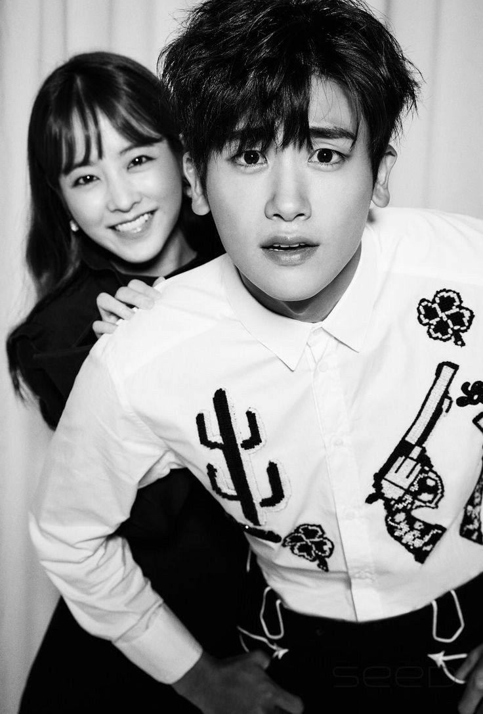
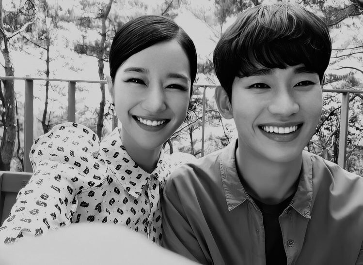
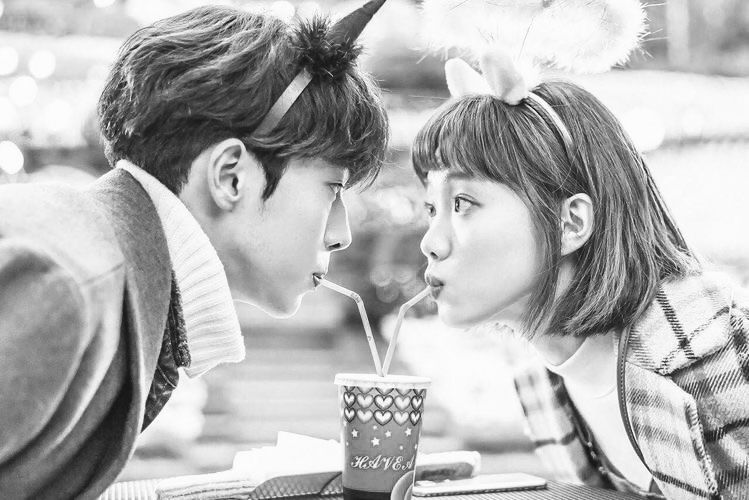
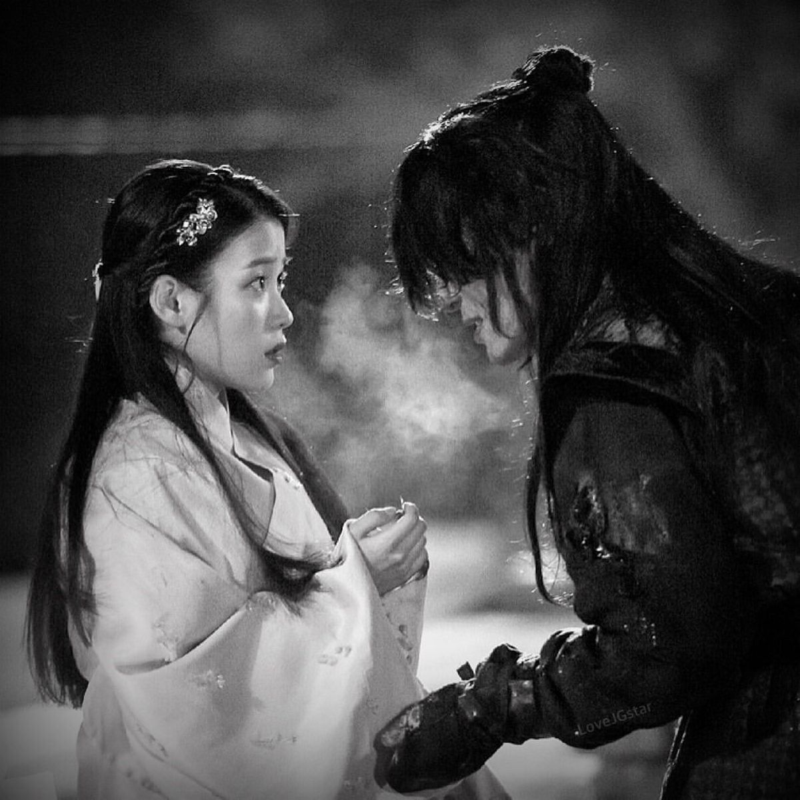
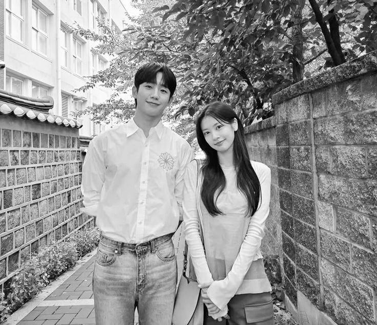

Korean dramas have transcended screens — sparking global curiosity about Korean food, music, language, and travel. This story traces the patterns of that cultural ripple effect.





Since the late 1990s, Korean dramas have been quietly reshaping global pop culture. What began as regional popularity in East Asia gained worldwide attention in the mid 2000s and hasn't slowed down since. Titles like Squid Game, Crash Landing on You, My Love from the Star, and KPop Demon Hunters are more than just entertainment. They serve as entry points into a culture that millions of people around the world are eager to explore.
The Hallyu (한류), the Korean Wave, is the broader movement: the global spread of Korean culture through music, film, food, fashion, and language. K-Dramas sit at its heart, the emotional hook that turns casual viewers into people who start learning the language, booking flights to Seoul, and cooking the food they saw on screen.
Sources
¹ Korean Cultural Centre UK (KCCUK). "Hallyu (Korean Wave)." kccuk.org.uk
² Variety. "'KPop Demon Hunters' Hits 20 Weeks on Netflix Top 10." variety.com, Nov. 4, 2025.
Every drama watched plants a seed of curiosity. Viewers don't stop at the credits, they search for Korean recipes, stream K-Pop playlists, study Hangul, and book flights to Seoul.
The data shows that K Dramas are not a passing trend but a sustained and growing force in global culture that transforms viewers into engaged participants in Korean life. Their emotional themes such as love, sacrifice, family, and ambition resonate universally, driving the continued expansion of Hallyu. As streaming platforms remove geographic barriers and audiences seek more authentic storytelling, Korean dramas demonstrate that powerful narratives can transcend language and culture, and the momentum behind this global influence continues to grow.